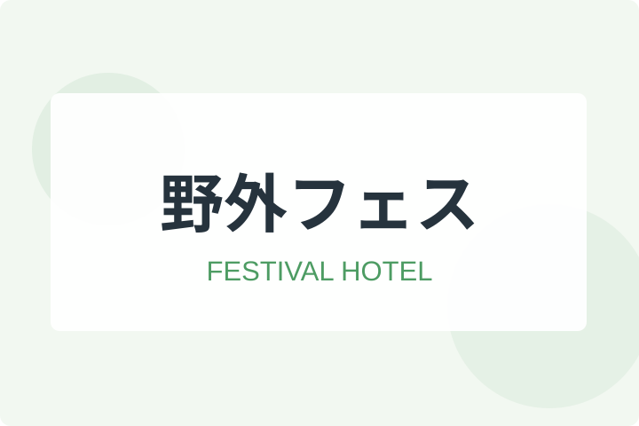
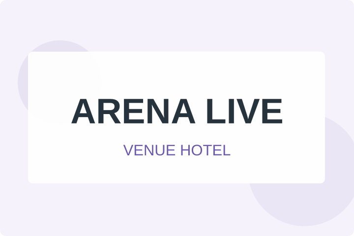

ライブやコンサート、フェス遠征におすすめなホテルや旅館をまとめています。
たけブログが頑張ります！
「○○アリーナの近くにホテルはある？」
「◇◇フェスってどうやって行くの？宿はある？」
「格安穴場なホテルを探せる？」
と気になる方は、ぜひ気になるコンテンツを読んでみてください。
フェス別おすすめホテル

FESTIVAL 全国のフェスにおすすめなホテル選び！会場へのアクセスも解説 主要フェスの会場、最寄り駅、送迎バス、宿泊エリアをまとめて確認 続きを読むライブ会場別おすすめホテル

LIVE 全国のコンサート&ライブのおすすめホテル！アクセスも解説 ドーム、アリーナ、ホール周辺と、終演後に移動しやすい宿泊エリアを紹介 続きを読むチケットサイト攻略
会場別キャパ一覧
CAPA 【全国】ライブ&コンサート会場のキャパシティ一覧会場規模とエリアから遠征計画を立てる ›気になるコンテンツをポチっと♪
スクロールできる予約サイト一覧
スクロールできる 予約サイト一覧表♪
| 予約サイト | 公式 | ホテル | 宿& 航空券 | 宿& JR | 宿& レンタカー | 航空券 のみ | レンタカー のみ |
|---|---|---|---|---|---|---|---|
| じゃらん | 公式 | 〇 | 〇 | 〇 | 〇 | × | △ |
| 楽天トラベル | 公式 | 〇 | △ | △ | △ | × | △ |
| JTB | 公式 | 〇 | 〇 | △ | × | × | × |
| 近畿日本ツーリスト | 公式 | 〇 | 〇 | 〇 | 〇 | △ | 〇 |
| 日本旅行 | 公式 | 〇 | 〇 | △ | 〇 | × | 〇 |
| HIS | 公式 | 〇 | 〇 | × | 〇 | 〇 | 〇 |
| 一休.com | 公式 | 〇 | × | × | × | × | × |
| ANAトラベラーズ | 公式 | 〇 | 〇 | 〇 | 〇 | × | 〇 |